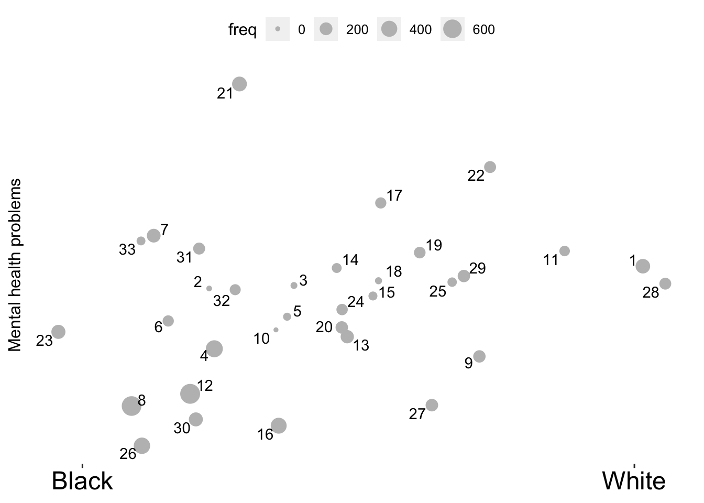
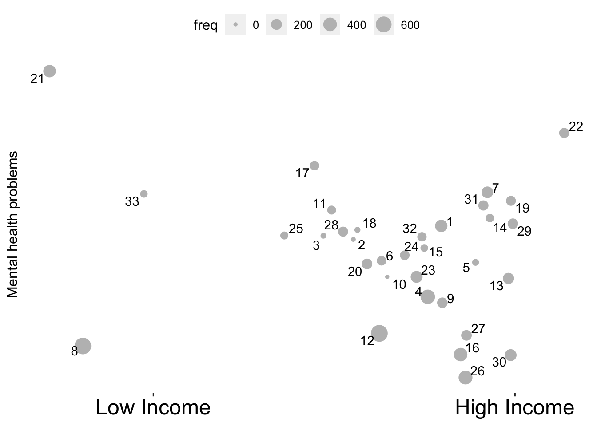

Open-ended childcare responses
How many topics
Most common topics

Identify topics
All
1
## Topic 1 Top Words:
## Highest Prob: day, week, abl, nanni, watch
## FREX: babysitt, week, nanni, watch, per
## Lift: maxim, failur, februari, hectic, hoursweek
## Score: day, week, babysitt, nanni, watch##
## Topic 1:
## My husband owns his own handyman home repair business. With the pandemic, people don't really want visitors in their homes. So his work has dramatically slowed down, lots of big projects cancelled. I bring my daughter with me to nanny a few days a week for a mom who is an urgent care nurse. Her work has thankfully not laid anyone off, but her hours have decreased, which mean I watch her daughter 2 days/wk now instead of previously 3 days/wk, which also means decreased income for us. Besides finances, a lot of my recent stress (in the last week), has been because of potty training my daughter. Even though it's going well, it's a test of patience and very stressful at times. And my husband and I have had 2 major fights in the past week, which is uncommon for us. So my stress is not totally from the pandemic.
## Our biggest challenge is childcare and maintaining and income. I am transitioning from a purely clinical position where I am currently able to telework due to the pandemic, to a faculty position where I am expected to be on campus and put my family at risk. The Pandemic Unemployment Assistance (PUA) for independent contractors I have qualified for 3 weeks since the pandemic began, but my income has decreased greatly. I typically made 1800-1900 per week before setting aside for taxes prior to the pandemic. To qualify for PUA, I have to make less than 717$ per week. I currently average 700-800$ per week due to cancellations and no-shows.
##
## My grandparents watch my daughter one day per week. I would like them to watch my daughter 2 days per week so that I can get my work done. However, I think they are going to end up not watching her at all because the college I am going to work to plans to re-open face to face. I don't blame them. Every interaction we have with other people in-person amplifies our risks for contracting COVID-19 exponentially.
## Loneliness. We are really trying to do our part to help stop the pandemic by minimizing visits with family and friends. This past week, I had a virtual conference for my field (I am a grad student), and my mom and sister came to help with the baby. It made such a world of difference to be able to hug and spend time with someone in addition to my husband.
## Childcare is the other biggest challenge, insofar as I need to write my dissertation. I get frustrated sometimes that my paycheck is the more reliable of the two of us but my husband's job takes precedent over how we spend our time (he is a journalist so he has to be available at all hours, even though they will only pay him for 35, 40 before the pandemic started). It is really hard to find writing time or interview time with my participants because of this. Before the pandemic, I had planned to hire an in-home nanny two days a week. Now, it's just me and the baby until my husband runs out his 35 hours; then he takes her and I have more research and writing time at the end of the week. So the beginning of the week is always more frustrating than the end regarding our lack of childcare.
## My family has been mostly unaffected by the pandemic. My husband spent about 3 weeks working from home, and he found our 4 little ones to be a distraction, but he was able to close the door to the spare bedroom to work 8 hours per day and hold meetings via zoom. It was nice for me to have him home to help me take care of them if child care got hectic and help me clean the house since I gave birth to our fourth baby on February 20, 2020. Working from home allowed him to skip the 1/2 hour commute and the company is looking at having their engineers and others work form occasionally in the future. We also spent some of our time at home redoing the flooring on about half of the house. My 5-year-old had her preschool (twice per week) canceled for the rest of the school year. My 5-year-old and 3-year-old had their dance class (once per week) canceled until the fall. We have mostly been hiding in the house but we have twice allowed the kids to play with the neighbors outside in the front yard. They have a safe place to play outside every day in our back yard because we have a fence. We kept our well-child doctor visits and kept up-to-date on our vaccines. We hold a weekly zoom meeting "Sunday school" with my siblings-in-law and their children and my parents-in-law. Since our community is in Phase 1 of reopening, I walk around the neighborhood nearly every evening with my neighbor from across the street.
## Having a babysitter in the house a few hours a week.2
## Topic 2 Top Words:
## Highest Prob: return, pay, shut, transit, altern
## FREX: return, shut, pay, origin, necess
## Lift: return, stage, origin, shut, necess
## Score: return, pay, shut, stage, transit##
## Topic 2:
## I work at a school and fear of another shut down as I’m paid by hour but have to pay the daycare if she is there or not so school shut down I still have to pay them for when it opens up
## What will we do for child care when my wife returns to work? How much will her pay be effected when she returns to work.
## Paying rent and utilities. School or help with child care so I can return to work.
## Not having to pay tuition for daycare helped when they were shut down at the beginning of the quarantine.
## Our original day care has shut down and we have had to find alternative care and our child hates it3
## Topic 3 Top Words:
## Highest Prob: afford, free, reliabl, addit, financ
## FREX: afford, addit, free, reliabl, immunocompromis
## Lift: afford, finaci, immunocompromis, addit, free
## Score: afford, free, financ, reliabl, addit##
## Topic 3:
## books!, quality free or inexpensive childcare
## The loss of the unemployment stipend ($600/week) has pushed us immediately off of a cliff and into free fall.
##
## As a solo parent I have been unable to find work because there is no free and reliable childcare, and even private daycare is unreliable, and has limited scheduling available.
## More affordable childcare.
## Additional childcare
## Reliable and consistent, affordable child care4
## Topic 4 Top Words:
## Highest Prob: childcar, grandpar, manag, figur, spous
## FREX: childcar, grandpar, manag, figur, childcarepreschool
## Lift: childcarepreschool, miser, childcar, grandpar, -law
## Score: childcar, grandpar, manag, spous, childcarepreschool##
## Topic 4:
## Grandparents providing free childcare
## Free childcare provided by grandparents
## Grandparents providing free childcare
## Grandparents proficient free childcare
## Grandparents providing childcare. Work being very flexible.5
## Topic 5 Top Words:
## Highest Prob: time, still, full, part, hous
## FREX: full, still, time, part, fortun
## Lift: rehir, full, still, time, part
## Score: time, full, still, part, hous##
## Topic 5:
## Working full time and providing child care full time is not sustainable
## I work from home with a full time nanny. We’ve done three rounds of quarantine (5 weeks at the beginning, 14 days waiting for a Covid test result, 5 days waiting for a test result). Each round means the nanny doesn’t come to work and I somehow have to home school 2 kids, babysit a third, and work full time all at once.
##
## I’m in a job where my boss doesn’t like me. If I neglect work responsibilities she will likely use this as a reason to fire me.
## Childcare & going back to work full time. My hours got cut from full time to part time because I don’t have childcare.
## I’m grateful to spend more time with my son. I enjoy working at home. If I could send him to daycare part time, that would be helpful but he probably won’t go back.
## We’re really lucky - we’ve maintained our jobs and income. Our biggest struggle was 3.5 months without daycare, with me trying to juggle full time childcare and full time work.6
## Topic 6 Top Words:
## Highest Prob: attend, thing, realli, better, play
## FREX: attend, better, goe, play, group
## Lift: breed, nowher, unknow, contain, dream
## Score: attend, play, realli, thing, better##
## Topic 6:
## Through all the bad that has happened we appreciate all the time we get to spend together. Before COVID we averaged 2 hours/day with our children and much of that was meals, baths, and getting for school or bed. I feel like I understand my children better and we can respond to their needs better. They are more relaxed and happy being with mom and dad everyday. Our 3yo misses her friends from child care but the 6 yo "hated" school last year and is really excited to stay home.
## My mother (69 years old) is part of our household and helps me with childcare, and she's also the only socialization my 3 year old gets outside of us, her parents (mom and dad). I'm aware of people "bubbling" with other families to get the kids to have someone to play with but I have no idea how to do this WHILE ALSO keeping my mother safe. It's not worth me losing contact with my mom to have my daughter get an occasional playdate. But once things really start opening up and my husband goes back to work in person I don't know what we are going to do.
## I want my child to do the fun things I did as a kid such as dance classes and going to parks and loving the library and having friends but I also want to keep her safe. So what is the best way to do that? How do I let her be a kid and keep her safe? At what point do I stop worrying and just let her have fun?
## My mother (69 years old) is part of our household and helps me with childcare, and she's also the only socialization my 3 year old gets outside of us, her parents (mom and dad). I'm aware of people "bubbling" with other families to get the kids to have someone to play with but I have no idea how to do this WHILE ALSO keeping my mother safe. It's not worth me losing contact with my mom to have my daughter get an occasional playdate. But once things really start opening up and my husband goes back to work in person I don't know what we are going to do.
## My mother (69 years old) is part of our household and helps me with childcare, and she's also the only socialization my 3 year old gets outside of us, her parents (mom and dad). I'm aware of people "bubbling" with other families to get the kids to have someone to play with but I have no idea how to do this WHILE ALSO keeping my mother safe. It's not worth me losing contact with my mom to have my daughter get an occasional playdate. But once things really start opening up and my husband goes back to work in person I don't know what we are going to do.7
## Topic 7 Top Words:
## Highest Prob: distanc, keep, spread, social, clean
## FREX: distanc, spread, facil, rule, clean
## Lift: capabl, deep, gear, contagi, curbsid
## Score: distanc, clean, follow, spread, keep##
## Topic 7:
## Mostly sanitization procedures and how they'll keep a classroom of half a dozen two-year-olds from touching all the things and each other.
## Young kids don't comprehend social distancing. There is no way to keep social distancing in outside childcare facilities, period.
## I work in a middle school with nearly 1400 students and staff. Social distancing won’t happen and classrooms will have 25-30 kids. Students sit directly across from one another and hip to hip in the lunchroom. Nearly 400 kids and staff. It is not a large lunchroom.
## There is no way on god’s green earth a daycare can be socially distanced. Kids are snotty germ factories and daycares are notorious for spreading germs. This will rip through daycares and it’s not the daycares’ fault.
## Me- How to follow the CDC guidelines in Currently overcrowded classrooms, hallways, etc.
## Child care- how to follow distancing guidelines while meeting their social/emotional needs. Littles need interaction and struggle to understand why the rules are the way they are.8
## Topic 8 Top Words:
## Highest Prob: child, care, need, never, employ
## FREX: care, child, never, applic, afraid
## Lift: cheap, purpos, care, child, autisticoddadhd
## Score: care, child, never, need, employ##
## Topic 8:
## Finding a solution to my child's child care.
## I'm not currently working or using child care.
## Stay-at-home mom, no need for child care
## I need to have my son in child care and I never have before
## Our employers never closed and we do not use child care.9
## Topic 9 Top Words:
## Highest Prob: teacher, mask, wear, classroom, seem
## FREX: classroom, wear, mask, teacher, doesnt
## Lift: enabl, water, elearn, hadnt, recess
## Score: mask, classroom, wear, teacher, water##
## Topic 9:
## The university doesn't seem to understand the childcare crisis that's upon us. The university seems to understand the importance of trying to protect students, but doesn't seem to be doing enough to protect faculty and staff (who are more at risk than the students).
## I am concerned as I heard we would have to wear masks inside the office, and that seems inconvenient and tough... If I am on a conference call or want to drink water, I don't want to have to move the mask. It sounds distracting and hard to breathe throughout the day so I would prefer to stay home. And that enables me to not worry about childcare which is safer so we're both home
## My classroom doesn't have running water
## I would just love some money to provide the curriculum/play materials that I think would be best for my kiddos (I'm a teacher, so I can figure out what the best books/toys/etc are on my own). Our house isn't set up with the materials of a day care or preschool.
## I wish people would just wear the mask. I don’t understand the opposition. I especially don’t want to go be locked into a classroom with kids who’s families are not being cautious.10
## Topic 10 Top Words:
## Highest Prob: safe, option, abil, arrang, possibl
## FREX: safe, option, abil, unsanitari, arrang
## Lift: safe, unsanitari, option, abil, arrang
## Score: safe, option, arrang, abil, unsanitari##
## Topic 10:
## What is safe vs what is risky? Will I have daycare options?
## Whether it will be safe and will my daughter be safe at child care.
## Virus spread and lack of safe child care options.
## Safe child care for families. We do not have the state regulations in place for families to feel safe to send their children to child care.
## Safety; childcare options11
## Topic 11 Top Words:
## Highest Prob: though, month, actual, sever, made
## FREX: sever, felt, stimulus, made, actual
## Lift: conflict, cubicl, stairwel, trade, walkway
## Score: though, sever, made, felt, check##
## Topic 11:
## The fact that my mother in law lives directly across from us!!! She has a pool, playground ,etc. And also it's nice to have human, adult contact in social situations. The stimulus checks are also a HUGE HUGE help. The fact that everything is closed makes it super easy for me to work from home (whereas I'd have to work outside of home and find childcare when everything opens up again).
## I felt worried for my childrens' emotional well-being and felt sad for them that they missed their classmates.
## I think even though stimulus checks were helpful, I think direct support with childcare so that families could employ people who can dedicate themselves to one family period. Could you a long way
## employer policies allowing some breathing room around leave for childcare
## we're dealing with quarantine fatigue like everyone else, but viral cases are ticking up in our area
## we're hoping to find a nanny share bubble that we could use to get a little breathing room and socialization12
## Topic 12 Top Words:
## Highest Prob: work, home, husband, stay, can
## FREX: work, home, stay, balanc, husband
## Lift: teenag, work, home, sept, balanc
## Score: work, home, husband, stay, balanc##
## Topic 12:
## Trying to balance my husbands full work schedule and my return to work and childcare
## My husband and I are lucky to be able to work from home. We’ve been working from home since March will probably continue working until later Sept from home. Our daughter’s daycare will open in June and that gives me a bit of anxiety due to the covid 19.
## It's difficult to work from home. My husband and I are not nearly as productive as when we were in our offices. We are fortunate to have childcare at home.
## balance working at home with childcare at home
## that I will be fired when my productivity numbers go down becasue I have to do childcare at home while working at home13
## Topic 13 Top Words:
## Highest Prob: worri, take, virus, center, expos
## FREX: virus, worri, center, bring, precaut
## Lift: enclos, surpris, syndrom, virus, kawasaki
## Score: worri, virus, peopl, expos, take##
## Topic 13:
## Other people not taking necessary measures to avoid exposing themselves to the virus and then bringing it into the daycare setting.
## I’m worried about them being exposed to more people now that we no longer have childcare from grandparents. I’m worried about going back to work and contracting the virus and dying or passing it on to my parents and them dying from it.
## Working in healthcare I worry everyday about bringing home the virus to my child. I worry the child care do not take the virus as serious as my family does and may infect my child.
## My daughter's daycare really seems to be taking all the precautions. Still, I worry about her coming into contact with Covid. In a way, I'm glad to be freelancing - I'd rather not be in an office with a ton of other people right now.
## My company has stated an office reopening of June 15. They say we should only return when we feel comfortable, but will they still look negatively upon those of us who do not return right away? If I continue to use my mother-in-law, who is in her 70s, for childcare, I do not want to go to an office with hundreds of people each day, potentially exposing myself, and then by proxy her, to this deadly virus.14
## Topic 14 Top Words:
## Highest Prob: send, feel, dont, reopen, even
## FREX: send, reopen, dont, comfort, feel
## Lift: decent, owner, send, locat, chosen
## Score: send, feel, reopen, dont, even##
## Topic 14:
## We’ve removed my son from childcare and I’ve since stopped seeking work after being laid off. I don’t feel comfortable sending him back to childcare at this point, so finding work will be difficult.
## I am not comfortable sending Cedar back to day care. It was not my ideal before this and now I just can’t even consider sending her back.
## Recently became a homemaker this year but I'm very happy I don't have to go back to my work. My old job was an essential job I would not feel comfortable working it sending my child to child care. I'm unsure when I will feel comfortable with sending my child to child care.
## no body cares around here! The daycare owner my SIL works at said she'll be dammed if they close the center again, she's not losing her business... WTF is that?! And why is my SIL taking my niece there when she goes to work?!
## I don't think it'll be safe for children to go to large daycare centers. I don't know when we'll feel safe sending our daughter back.15
## Topic 15 Top Words:
## Highest Prob: famili, parent, support, health, member
## FREX: parent, famili, member, support, substanc
## Lift: substanc, member, parent, aris, famili
## Score: famili, parent, support, member, health##
## Topic 15:
## Help from family members with child care, companionship in our "bubble" with family members.
## Help with childcare from my parents and other family members.
## Financial instability, mother/grandma who is our biggest support is in poor health and her healthcare is expensive, I have poor mental health and my child’s father has substance abuse issues and does not provide financial or child care support.
## Support from direct family members to get a break from child care.
## Support from family for childcare16
## Topic 16 Top Words:
## Highest Prob: daycar, back, kid, close, daughter
## FREX: daycar, back, close, kid, put
## Lift: schoolschildcar, site, daycar, unreason, jome
## Score: daycar, back, kid, close, daughter##
## Topic 16:
## Getting back into our regular routine with my daughter being at school and son being at daycare.
## The kids being back in daycare since it reopened, it keeps life normal for them and they've been much happier.
## Fear of sending my daughter back to daycare
## Finally going back to work and kids going back to daycare
## Concerns about sending my daughter back to daycare17
## Topic 17 Top Words:
## Highest Prob: help, incom, stress, financi, essenti
## FREX: help, financi, incom, essenti, assist
## Lift: allevi, boredom, produc, unenrol, stamp
## Score: help, stress, incom, essenti, financi##
## Topic 17:
## My parents are helping a little financially, a roommate to help with bills, discounted childcare through my work, and a credit card
## The childcare program for essential workers has really helped us out financially.
## Moved in with my parents for help with childcare and to alleviate financial pressures due to loss of work
## the county we reside in pays for our childcare bc both my husband and I are essential workers.
## Essential worker child care assistance18
## Topic 18 Top Words:
## Highest Prob: provid, enough, money, mother, wont
## FREX: provid, enough, debt, qualiti, might
## Lift: divid, debt, provid, relief, mid
## Score: provid, enough, money, mother, might##
## Topic 18:
## My mother in law providing childcare and cooked meals frequently.
## We need childcare subsidy and I need student loan debt relief.
## How to find adequate safe childcare so that we can return to work adequate hours/make enough money.
## Having my mother in law nearby helping with childcare.
## childcare and student loan debt19
## Topic 19 Top Words:
## Highest Prob: covid, due, risk, exposur, lack
## FREX: lack, exposur, covid, due, anxieti
## Lift: -month-old, loosen, safest, edg, unplan
## Score: covid, risk, due, exposur, lack##
## Topic 19:
## Increased risk for ourselves and for our childcare (previously was my mother-in-law, my daughter's grandmother, who is in a high risk category). Worry about my own risk levels and balancing demands of a job with what's safest for our family.
## Unplanned daycare shutdown due to covid exposure
## Going back to work after maternity leave, risk of contracting coronavirus at my job. Loss of childcare due to provider needing surgery.
## Contracting COVID, Running out of sick leave, & not receiving a paycheck. I would not have childcare or any support should that occur
## I am having an uncomfortable pregnancy. Money will be tighter once the second baby arrives due to cost of childcare.20
## Topic 20 Top Words:
## Highest Prob: class, person, onlin, teach, kid
## FREX: class, homeschool, size, teach, zoom
## Lift: art, chat, curriculum, digit, kindergartn
## Score: class, onlin, person, teach, zoom##
## Topic 20:
## For the kids: arts and crafts projects, t.v., video games, playing in the backyard
## For me: running around the neighborhood, virtual dance fitness/yoga/exercise classes
## Zoom with the preschool class, art projects, dance parties, Daniel tiger and cheetohs.
## We are active in community programs during the summer. Online parenting classes and classes with activities for the kids.
## My 5 year old has autism, speech delay. He was in a in school program along with therapies and that all stopped, our governor said schools for kids witj Special needs could open over the summer since class sizes were small if they could but our school decided to continue remotely. He has regressed so much. Teletherapy simply did nothing for him and even though his teachers and therapists tried so hard to engage him via video chat it simply didn’t work.
## A smaller class size would be better.21
## Topic 21 Top Words:
## Highest Prob: job, find, new, abl, without
## FREX: find, job, new, biggest, lose
## Lift: fianc, loos, prove, chronic, infus
## Score: job, find, new, lost, lose##
## Topic 21:
## Our biggest challenges are childcare and not having a job without receiving unemployment.
## I was just lay off so im worrying about my job. I am looking for new job but it’s hard and i dont know when i can find new job. With everything is going on, it’s extremely hard to find a decent job. And plus, i have a hard time to find child care for my baby
## That it may be hard to find a job and finding a babysitter without the risk of covid-19. Plus the money to pay for babysitting without a job.
## My job may be at risk, with sweeping layoffs coming. Even if I am lucky to maintain a position at my company, it would be smart to begin the search for a new role elsewhere. But looking for a job and potentially starting a new job while I am facing less than ideal childcare issues seems like such a hurdle.
## One person laid off - no childcare to find another job22
## Topic 22 Top Words:
## Highest Prob: good, live, chang, one, day
## FREX: good, almost, live, appli, -home
## Lift: lifesav, normalci, circl, freedom, muscl
## Score: good, everi, live, day, almost##
## Topic 22:
## Being quarantined and worrying about the state of the world is most troubling. Our youngest doesn't know any different than staying home, but our 3 year old really misses going to the park, jump house, playdate, and the in-home day care she used to enjoy so much. As a REALTOR, I've lost the majority of my clients during the Pandemic (or they're waiting to see what happens to determine if buying or selling makes sense for them in the future). Forunately by husband, who is a Loan Officer, has had steady business, especially with the refinance boom that's occured. We are very fortunate and count our blessings every day!
## I work for the health department in my local community, so this is a non-issue for me. We use an in-home licensed daycare provider who is pandemic certified (unheard of for a small town, so we are so lucky!). There aren't any concerns because life as we have known it has not changed much at all.
## Other then finding a place to rent is almost impossible the high rent makes it almost untouchable also to have 3x rent or to even make that a specially with only 2 small child care places and one 1 being state approved also there is a packed waiting list.
## The second baby was born in May, in the middle of the pandemic/lock down. Her birth has been a bigger reason for the changes in our household in terms of child care need than Covid. I have been diagnosed with Postpartum Depression following her birth as well.
## I also gave birth during the pandemic as well. All my classes were canceled (birth, breastfeeding, newborn) and family couldn’t safely travel so we had no support. My husband uses a wheelchair and couldn’t transport the baby safely until he was about 2 months old.23
## Topic 23 Top Words:
## Highest Prob: will, like, abl, whether, happen
## FREX: will, happen, whether, effect, septemb
## Lift: earliest, bind, deem, jobwhich, payhour
## Score: will, like, happen, whether, abl##
## Topic 23:
## We will not be using childcare until September and will not use it if we deem it unsafe.
## Same as above.... whether my decrease pay/hours is going to last even longer and if I should look for another job...which therefore would mean different childcare situation which would either mean a) family needs to watch him more and that might not be an option or b) we use daycare and take the risk of being exposed to coronavirus.
## How will they be able to screen people's health. Cross contamination in childcare environments.
## Worrying about finances and whether my decrease pay/hours is going to last even longer and if I should look for another job...which therefore would mean different childcare situation which would either mean a) family needs to watch him more and that might not be an option or b) we use daycare and take the risk of being exposed to coronavirus.
## We use gym childcare and church childcare. I am questioning how well the places will be maintained. Especially in the gym. So many children are in and out. At church there are usually the same children so I’m not as worried.24
## Topic 24 Top Words:
## Highest Prob: get, sick, hour, avail, also
## FREX: avail, sick, cost, get, reduc
## Lift: non-parent, aftercar, emerg, unchang, cost
## Score: get, sick, hour, increas, also##
## Topic 24:
## I have antibodies at the moment so I am less afraid for getting sick, but am worried that the community will open too quickly. Also worried about balancing work/childcare if schools only open in partial or limited ways.
## I only am paid for hours I am there. Reduced services at my job means drastically reduced hours and pay. I am unable to afford childcare if I am only able to work a third of my former hours.
## My middle son has severe asthma and he can not get sick or it could cost him his life. I have to go back to work and I don’t have a babysitter. Also, if I get sick and die who will care for my kids.
## Getting all of the extra work done. Our work hours have increased, but childcare has shrunk. Also, our youngest has had a very hard transition to non-parental care. She won't take a bottle for the full 8 hours that I'm not around and then wants to eat all night. So, it's also hard to do my job and parent on less sleep.
## I get worried that my family will be exposed and get sick. I have a toddler that I take care of 24/7 so I can't afford to get sick. My husband is working non stop because he is the health field so it would be hard to find childcare for my daughter. I worry so much that one of us will get sick.25
## Topic 25 Top Words:
## Highest Prob: now, son, right, pandem, trust
## FREX: son, right, now, furlough, paid
## Lift: decemb, intervent, mistak, occurr, stranger
## Score: now, son, right, pandem, trust##
## Topic 25:
## My son qualified for early intervention for speech. I wonder if not being at his daycare for 3 months in the spring negatively impacted his language development.
## I am very pleased with my son's daycare and their requirements. Each day, they take my son's temperature and the temp of the parent dropping him off. Then we attest that we have not traveled to any high-COVID areas, on a plane, a bus, or left the country, and that we do not have any cold symptoms.
## My child care setting is the same as it was before the pandemic. My employer wouldn't let me return to work after I gave birth and my 6 weeks of unpaid leave was up. They sent me home when I showed up to work, told me I would need a release from my doctor to return to work, with any restrictions, faxed to them. I asked my doctor's office to do this, they did, my work kept telling g me they never received it. I went back to my doctor and they gave my copies of the paperwork sent to my work. I had a talk with my husband because it seemed to me that my work was not wanting me there, and we wanted our baby to continue breastfeeding (I would have been sent away for training for 5 weeks if I stayed with my job). My husband and I agreed that I would stay home and raise the baby while he worked and supported us financially. I didn't bother following up with my work about the paperwork they "never received". So I received a letter of separation from them in December 2019 or January 2020. That happened right before the pandemic hit, so I'm still staying home, raising and breastfeeding the baby.
##
## If i did have to put my son back in child care or with a babysitter, I would worry that he would be more at risk of contracting the COVID19 virus. At home, we control our environment and what we do to keep him safe. I don't trust strangers with my son's safety, even before the pandemic, so I would worry twice as much now.
## The biggest concern I am facing right now as the single parent of my son is the uncertainty of my son's health right now. Unfortunately, my son has had ongoing fevers not accompanied by any other symptoms. As of right now, there is nothing doctors can do to assist this strange occurrence- lack of symptoms has them stumped. I worry about his health and hope this passes soon. He has been unable to attend daycare due to his fever. This leaves me worried about my online courses and juggling classes and taking care of a sick child.
## I have to work from home through December. I’d like to have started my son in daycare but am now hesitant (I’d probably have started him previously)26
## Topic 26 Top Words:
## Highest Prob: school, year, old, start, plan
## FREX: kindergarten, school, uncertainti, year, plan
## Lift: announc, unreli, kindergarten, carehomeschool, congenit
## Score: school, year, old, start, plan##
## Topic 26:
## The school district just announced 100% remote learning. I’m sad for my daughter starting kindergarten, but we are blessed to have found a nanny with elementary education experience for my 3 children (5 months, 5.5 yrs and 8yrs).
## We have expanded our pod to include a nanny and a tutor (starting next week). It makes me nervous but is in the best interest for our newest priority - school
## 1. I don’t know if you’re using childcare and school interchangeably.
##
## 2. She doesn’t attend childcare, however She is enrolled in a private school (pre K). She just completed her second academic year and although we are signed on for next year we have concerns. Remote learning during the last few months of school was a challenge and we question the utility of it. If there should be a move to remote learning next year we would much rather just home school her for the year. Not being an educator I am a bit apprehensive about taking on this role.
## #1. Enrollment to PreK for the next year. We are contractually committed to a program however we do not want to ensure the learning disruption that occurred this year again, should there be a second wave. #2 remote learning does not provide the value that we pay in the negotiated cost of private preK tuition #3 a large part of the value is the socialization component which may be reduced or eliminated if classes are modified or remote learning is deemed the only safe alternative. #4 home schooling- taking on a larger educator role at home and balancing the new dynamic that entails.
## Our five year old is entering kindergarten in August. This feels like the next big choice we have to make and face the consequences of either in-person classes or remote learning.27
## Topic 27 Top Words:
## Highest Prob: open, don’t, know, want, sure
## FREX: don’t, sure, open, healthi, soon
## Lift: toddler’, anytim, tomorrow, telecommut, don’t
## Score: open, don’t, want, know, sure##
## Topic 27:
## I really want public school to reopen. My preschoolers daycare has stayed open which makes me uncomfortable. I am on the waitlist for a preschool but I’m not sure if we will want to send her or not.
## Don’t know what we’ll do for childcare if schools don’t open and unemployment stops
## My daughter’s preschool has been open the whole time however we haven’t sent our daughter since March but we still pay half tuition each month to hold her spot and support the school. We are about to have twins and are concerned about what to do about childcare as we aren’t sure if it’s safe to send our daughter back to preschool both for her as well as for what she might bring back to the twins.
## I just sent my daughter back to daycare this week and I know they are doing their best to keep everyone healthy but I’m just worried.
## If my son went to day care and I didn’t have to work, I would not sent him back. I am already not thrilled about schools opening back up before a vaccine is ready.28
## Topic 28 Top Words:
## Highest Prob: see, just, hard, start, visit
## FREX: visit, groceri, store, appoint, shop
## Lift: divorc, medit, survey, behav, consum
## Score: see, just, store, visit, groceri##
## Topic 28:
## My husband was supposed to get health insurance through his job (he was a new hire right as we had our baby, started with them from a temp agency, but was hired by the company). April 1st was when he was eligible to get health benefits for our family. But then they messed up his paperwork, and no one will fix it, and they keep blaming Covid-19 and being swamped as why they haven't started his benefits, but it's all very stressful for me that we are so grossly under-insured and I'm required to go into work. I'm still breast feeding our baby, and sometimes by the time I get her home and she's crying to nurse, I forget to take off all my clothes and wash my hands before I get her from her car seat, and I'm just terrified I'll pass on something to her or our 4 year old, or they'll pick it up from our babysitter not being responsible.
## We currently receive WIC benefits, which I am certainly grateful for, but there is no way to use it unless I go into a store in person. While my other friends are ordering online and having groceries delivered, I am not only risking my family's health to go into stores, but I have also faced great difficulty in finding times when I can go shopping, as I no longer take my kids into the stores. If I don't go shopping on the days when my husband is off, we do not have food for the week. I have come to expect the dirty looks and sudden attitude changes in everywhere from healthcare to customer service when providers see that we are on public aid. However, now more than ever, I am seeing the true barriers that stand between people in need and the services these programs are meant to provide. I have often gone without the groceries we really need because it is so stressful to have to line up childcare, go into stores where I feel I'm risking my whole family's health, not working to provide any income, then having to face even more impatience from cashiers. Can I really blame them? No. Half of the items listed as WIC eligible do not come up in grocery store systems so a manager has to be called, employees, and customers start complaining about you. Also, the deductibles and copays for the mental health services (nevermind regular checkups) are far too high although the insurance we are paying to have those services is consuming our income. This virus is really exposing the delicate balance act we maintain in our regular financial life. Our need is greater, but our income is less. So we continue to go without. It's just more painful now.
## I'm exhausted. My mom friends are exhausted. It feels like moms are taking on the brunt of the physical labor (cooking meals, childcare, laundry, changing diapers, cooking again, breaking up fights, and repeat) as well as the mental labor (calming down anxious kids and partners, figuring out how to do telehealth, pinteresting to find activities for kids, scheduling family FaceTime calls, thinking of creative meal ideas for the 8 millionth lunch, making grocery lists, and all the worrying.) It just feels like more work was created at home and women picked up all the burden. I'm still seething from when my husband said "I love working at home. I could do this for another year." He was just so blind to how I was struggling despite me trying to explain it. Logistically, my job is more flexible but I don't think he gets the priviledge of being able to work 9-5. He complained last weekend as I left to go work that he "never gets a break on the weekends." I almost lost it on him. I don't get a break ever. Even now at 11 pm at night I've taken a "break" to fill out this survey but then I'll be back to my emails until probably midnight. And then up again at 7 am with the baby and it starts all over.
## I’m extremely concerned about the increase in COVID cases as things start to open up. I received an email today informing me that the campus where I am to start a new job on august 15 has a confirmed positive COVID-19 case. The campus technically isn’t even open yet!
##
## If I asked the family members who were babysitting my daughter prior to COVID to come to our house and watch her like they used to, they would. But I feel the weight of the world on my shoulders. I can’t put 2 of my 3
## Previous childcare arrangements back to “normal” because they are high risk due to their ages and health histories.
##
## I also blame the federal government for their poor early response, as I believe this all could have been avoided. I can feel my stress level rise in a visceral response that stays with me for hours whenever I drive past a “Trump 2020” sign.
##
## Our biggest challenges relate to childcare for my daughter. Prior to COVID-19, my mother-in-law, grandparents, and a mother-figure (woman who was my father's girlfriend for 20 years, including the majority of my childhood) of mine watched my daughter while I worked outside the home. I am currently doing tele practice speech therapy. As Berks County prepares to enter the green phase of re-opening in Pennsylvania, I may be expected to go back to providing home-based services and need increased childcare. However, all caregivers except my mother-in-law are elderly and immune compromised. I can't comfortably ask them to come back, but my mother-in-law is a self-employed photographer and needs to work too.29
## Topic 29 Top Words:
## Highest Prob: tri, keep, decid, make, done
## FREX: tri, camp, done, night, sleep
## Lift: -school, donat, grant, pray, deserv
## Score: tri, keep, done, decis, sleep##
## Topic 29:
## While greatly sadden by the negative effects of COVID-19, we have greatly benefited from increased family time. I have learned to garden and taken on many fun projects with my three year old while still maintaining the organization that I am ED of and working on my doctorate. Today we made violet jam. We feel very lucky to have moved into a larger house in Shelburne before the pandemic hit and are quite comfortable and self sufficient, with extremely understanding places of employment. I know all of my statements are privileged, but that is why I am making them. I believe that COVID-19 has so disproportionately hit folks that are in the lower middle and working classes, that we will not learn the full effects for a while. My family is donating about 10 times what we would normally donate to organizations, but it still feels like a pittance in the face of this pandemic.
## Unable to focus on either work or childcare properly, making a decision around resuming childcare, difficulty making work deadlines
## Trying to empathize more with my child. We are super stressed as parents, but I understand my son isn’t getting the typical student/teacher interaction and learning they usually get while in childcare. So I understand why there are more tantrums and I try to keep my son happy and engaged as much as humanly possible.
## We both work, while trying to keep the kids as much as possible at home to avoid expensive daycare expenses. It has always been busy, we used to sign thm up for activities that help them release all of their energy so they are calmer and easier to deal with at home. With this out of the table, oh boy! I don't know how to help them release that energy while still keeping my job. I have been thinking of quitting to be able to keep my kids occupied and give them the right amount of care and education. Everything seems to be out of sync right now...
## We are exhausted. Working from home with no childcare is next to impossible. We get any work done that requires focus during the overnight hours. We don’t get much sleep and we are still having to juggle video conferences during the day with an energetic toddler. While our employers are understanding the novelty is wearing thin and it’s frustrating to be unable to participate and contribute to my ability because of a disruptive child. At the same time, we are feeling guilty for not giving her the attention she deserves.30
## Topic 30 Top Words:
## Highest Prob: concern, employ, safeti, place, case
## FREX: safeti, infect, concern, protocol, place
## Lift: administr, contagion, long-term, primarili, secondari
## Score: concern, place, safeti, employ, case##
## Topic 30:
## The daycare will take all the appropriate measures to ensure safety. I’m not as concerned about that. My place of employment however has me concerned because our measures are more lenient. They do the bare minimum to follow health department protocols, but don’t care about their employees.
## I work at the same place that my children have their childcare. I am very concerned (based on my knowledge of the people who would be making this decision) that they will not be enforcing the safety guidelines. If this is the case, I will need to weigh my own safety and the safety of my children (both born and unborn) against the income I would lose if I chose to leave.
## I don't have any concerns about my place of employment. As for the daycare, I just want to ensure they are adhering to government and health organization's recommendations (e.g. social distancing measures).
## Safety for my place of employment. I work at a university and we are all very concerned about bringing over 17,000 people back onto campus, especially all the students who are from out-of-state. Our only concern with childcare is coverage at this point. They have shown that they are great with safety and health procedures.
## Knowing the administration where I work, I am very concerned that they will not enforce the safety guidelines. This is also where my girls have childcare, so I am concerned that if safety is not taken seriously, I will need to choose between my job and the health of my family.31
## Topic 31 Top Words:
## Highest Prob: need, educ, access, isol, futur
## FREX: access, ’re, isol, educ, flexibl
## Lift: access, compet, high-qual, internet, marit
## Score: need, educ, access, isol, flexibl##
## Topic 31:
## Creating a schedule. Communicating daily in the morning to understand our work/childcare needs throughout the day.
## Clear, daily communications about childcare and household needs
## Flexibility from our employers that allows us to forgo childcare in order to keep our family isolated from risk.
## My husband’s shift schedule, which allows him to be home multiple days during the week, and my friend offering flexible childcare for our preschooler.
## Talking with friends and family on the Marco Polo app and FaceTime. Reasonable flexibility from our workplaces about child care and work. Having a backyard for our daughter to be in.32
## Topic 32 Top Words:
## Highest Prob: children, social, also, develop, interact
## FREX: interact, children, scare, develop, other
## Lift: detriment, happier, alot, extent, housekeep
## Score: children, social, interact, develop, other##
## Topic 32:
## My biggest concern is about the social development of my daughter. Prior to Covid, we did mom and baby music classes, story times, and Bible studies. For my daughter, she interacted with other adults and toddlers and then suddenly she no longer saw any children and the only adults in her life became me and my husband. She is young, but I wonder if it will affect anything to have gone several months without the opportunity to interact with different adults or other children.
## I am deeply concerned for my children’s social and emotional needs. My oldest used to go to classes and activities and they have been shut down for quite some time. Her friends’ parents are too scared to get the children together. She is also scared of the masks. I am worried for my youngest because she has been in lockdown her whole life and is scared of other adults besides me, her father, and one grandmother.
## Ensuring interactions with other children when we are not enrolled in daycare or Spanish immersion.
## Covid has restricted us from doing social activities with our child. We used to be involved with public story time, music classes and other educational activities. It was an opportunity not only to learn but to interact with peers. Covid has forced many places to suspend these activities.
## Social and emotional development for our child, since he has no siblings or cousins close in age. We were just about to put him in day care before Coronavirus. We felt he needed to be around children.33
## Topic 33 Top Words:
## Highest Prob: cant, can, food, bill, expens
## FREX: food, medic, expens, save, cant
## Lift: crowd, evict, payment, medic, save
## Score: cant, bill, food, medic, rent##
## Topic 33:
## The extra 600 has helped me add to the funds I saved for a used car. I could buy a 13,000 car cash if I wanted to but now more concerned with Bill's in the future I can't work due to no childcare and e learning. Have snap helps me stock up on foods as prices increase and meat is scarce or limited. Free lunch from schools they give for the week helps me feed my kids a portion controlled meal 3 times a day and helps me save money by not spending it on fast food, etc. No disconnect on light bill let's me pay on the lights when I am financially able to pay it instead of paying lump sum when I am late on payment. I keep balance under $225. Medicaid allows me to go to Doctors care when I am really concerned about me or my children's health but afraid to go to regular doctors office that's crowded especially pediatric offices. I can sign in online and wait in car until called.
## Figuring out childcare and paying medical expenses. We were using my partner's mother for childcare but my brother in laws haven't been being cautious enough and using masks, handwashing, and social distancing as much as we would like and since they are exposed constantly to my mother in law we have decided to stop using her for childcare right now. We have to be extra cautious as we are expecting our twins to come any time now and we can't risk exposing them. For this same reason, we aren't ready for our daughter to go back to preschool. This pregnancy has included many complications so in addition to medical bills we already had for my partner's surgery a couple years ago and my daughters doctor's appointments over the last couple years, we now have a huge amount of medical bills for this pregnancy. This has caused us to have challenges with managing all the payments and establishing payment plans we can afford.
## How will I afford childcare as a single mother of 2 making under 15 an hour with rent 1200 plus a month and that's nt even including the car I have to save for, the daycare I have to pay, and food, phone utilities etc.
## Money for bills, mortgage payment, daycare, car payment
## My biggest challenge is staying on top of bill payments such as rent, daycare, and car payments while my income has been decreased significantly.Effects

